Fun with Filters and Frequencies
Part 1.1Convolutions from scratch
I wrote 2D convolution two ways. The first uses four nested loops, two over the image and two over the kernel, accumulating one multiply at a time. The second keeps the two image loops but replaces the inner pair with a single vectorized multiply over the whole patch:
patch = padded_image[img_h:img_h+kernel_height, img_w:img_w+kernel_width] output[img_h, img_w] = np.sum(patch * flipped_kernel)
Both zero-pad by half the kernel size on each side so the output matches the input
dimensions, and both flip the kernel before sliding it, which is what separates
convolution from correlation. Checked against
scipy.signal.convolve2d with mode='same' on a random 20×20
array: all three agree to floating-point tolerance.
Applied to a photo of myself, downscaled 4× first because a per-pixel Python loop on
the full 3088×2316 original is far too slow. Below: a 9×9 box blur, and the
finite difference operators Dx = [1, 0, −1] and its
transpose.
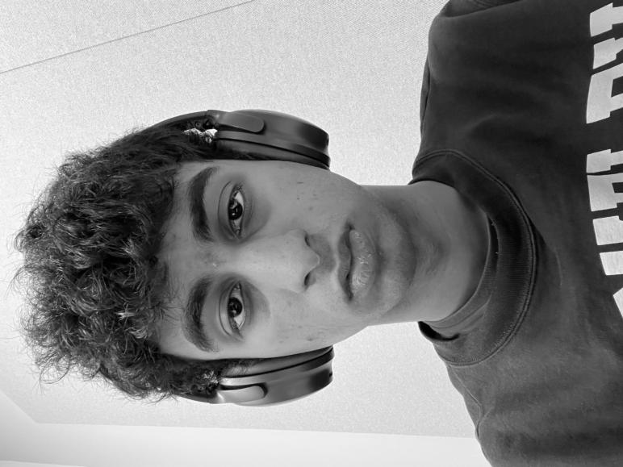
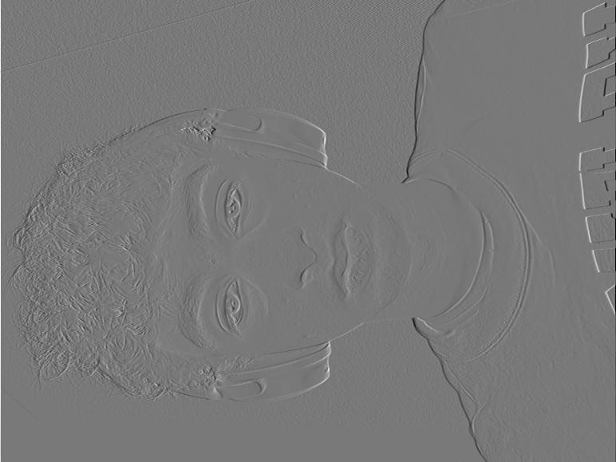
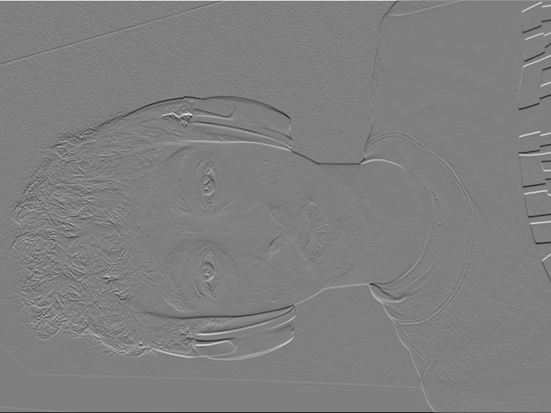
Part 1.2Finite difference operator
Convolving the cameraman with Dx and Dy
gives the partial derivatives in each direction. Each one only responds to edges running
perpendicular to it. Dx picks up the vertical tripod legs
and building edges, while Dy picks up horizontal ones like the
horizon.
Combining them into the gradient magnitude
sqrt(Dx² + Dy²) gives an
orientation-independent measure of edge strength, which I then threshold to get a binary
edge map.


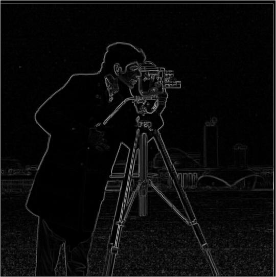

Part 1.3Derivative of Gaussian filter
Blurring first with a 9×9 Gaussian (σ = 1.5) and then differentiating gives a much cleaner result. The grass noise largely disappears, the remaining edges are thicker and smoother, and the binary edge map holds together as continuous contours instead of broken speckle.

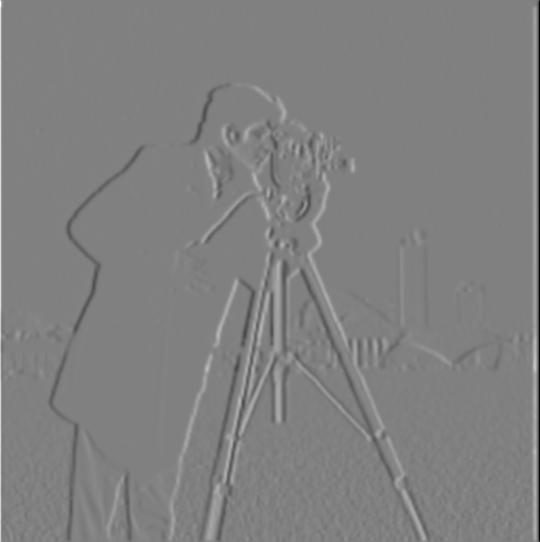
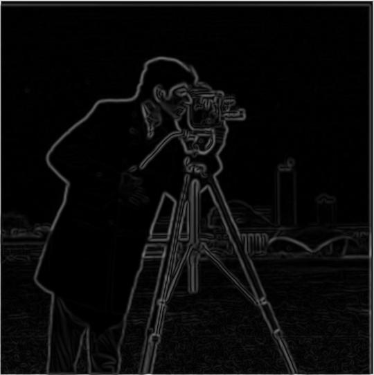
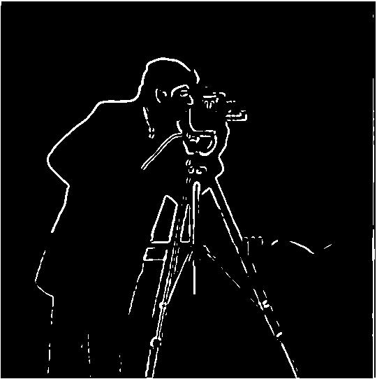
The same result comes from a single convolution. Because convolution is associative,
convolving the Gaussian with Dx first produces a derivative-of-Gaussian
kernel that does both jobs in one pass:
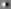
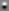
np.allclose returns True, but only away from the
borders. Padding the raw image once makes different zero assumptions than padding the
already-blurred image a second time, so I exclude a margin of half the combined kernel
size on each side before comparing. The interiors match exactly.
Part 2.1Image sharpening
Unsharp masking works by isolating what a blur removes and adding it back amplified.
Low-pass the image to get blurred, subtract to get the high-frequency
detail, then add a scaled copy of that detail to the original:
sharpened = f + alpha * (f - f*g) = (1 + alpha)*f - alpha*(f*g)
Since convolution is linear, this collapses into a single kernel: a scaled
impulse minus a scaled Gaussian, which I build as
(1 + alpha) * impulse − alpha * gaussian and apply in one pass
per color channel.

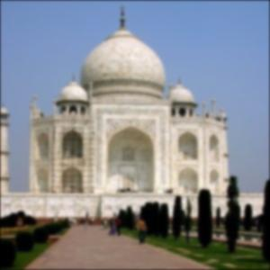
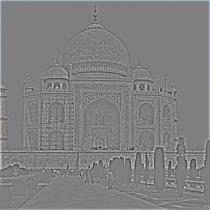
Varying the sharpening amount
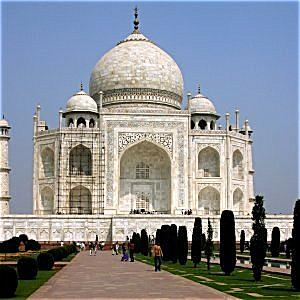
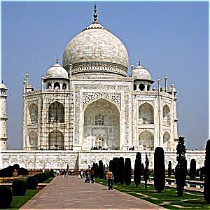
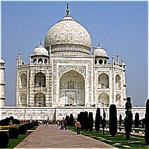
Higher alpha gives progressively more contrast at edges. By alpha = 3 the masonry detail is crisp, but halos start forming along high-contrast boundaries.
A second image
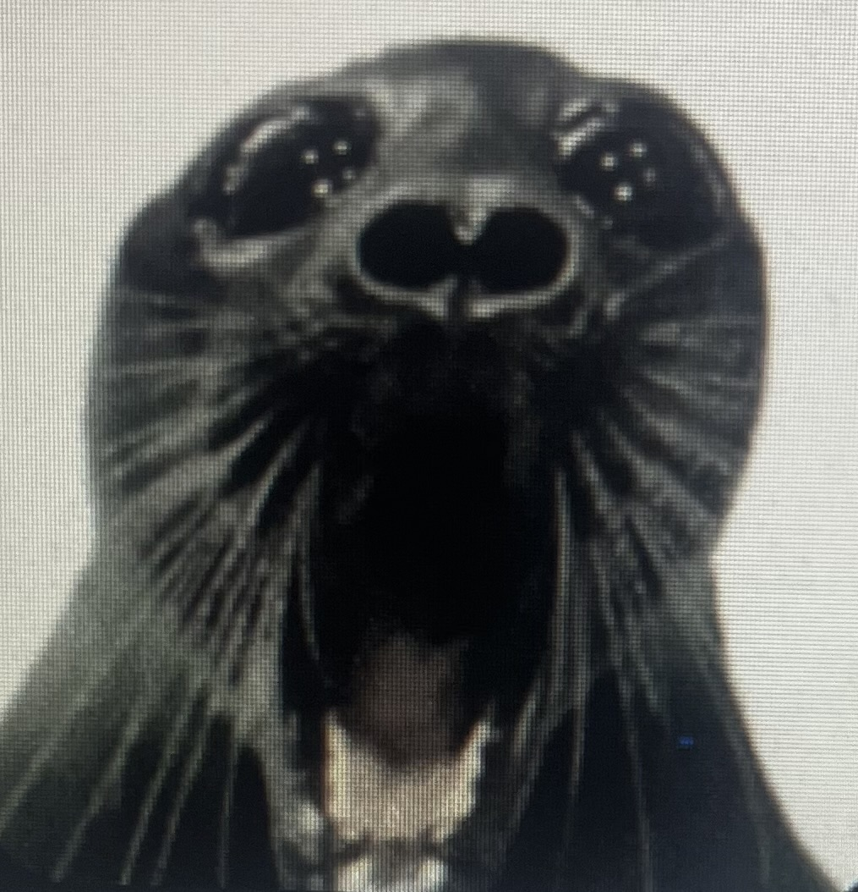
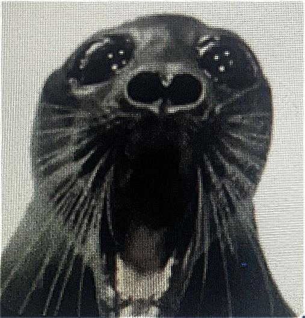
The whiskers, eye detail and nose edges all come up sharply. Worth noting the background grid pattern also gets amplified. The source is a photo of a screen, and unsharp masking boosts all high-frequency content, not just the detail you care about.
Sharpening a blurred image: the round trip
Part 2.2Hybrid images
A hybrid image combines the high frequencies of one picture with the low frequencies of
another. Up close your eye resolves fine detail and sees the first image; from a distance
that detail is no longer resolvable and the blurred second image dominates. The
high-pass is image − blur(image, sigma1), the low-pass is
blur(image, sigma2), and the hybrid is their sum.
align_images recenters each image by zero-padding until the
eye midpoint is centered, then crops. For pairs with very different dimensions that
padding is large, and it left black bars and a visible diagonal seam in my results.
Instead I scale each image to a fixed target eye distance and crop a window around the
eye midpoint that both images can fill, so every output pixel comes from real
image data. For Derek and Nutmeg I fit a similarity transform to the two eye pairs, which
also handles rotation. That is necessary here because Nutmeg's head is tilted about 27°
relative to Derek's.
Derek + Nutmeg: sigma1 = 4, sigma2 = 12
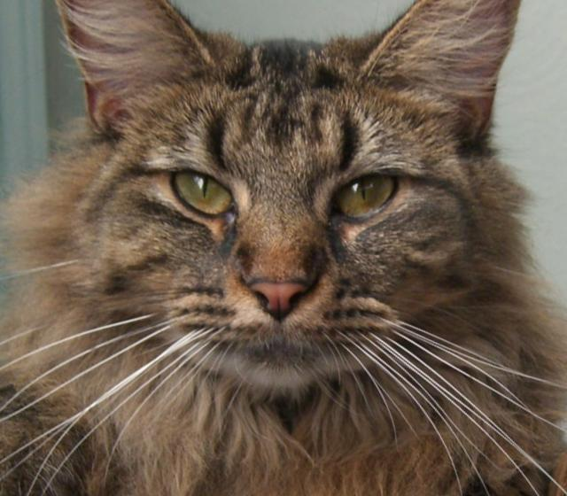
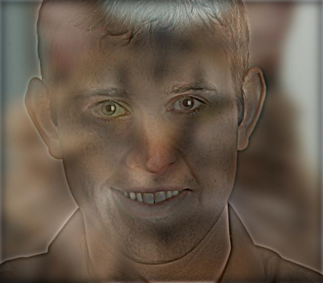
Seal + panda: sigma1 = 4, sigma2 = 12
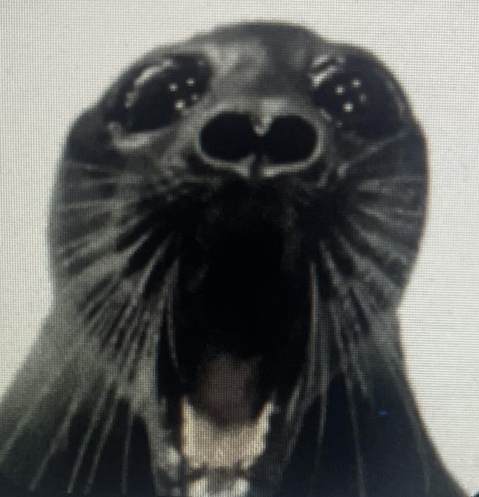
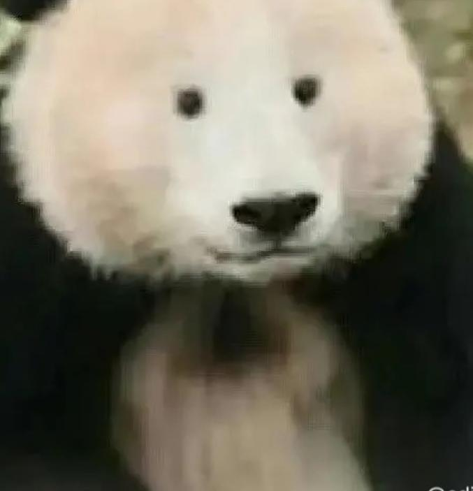
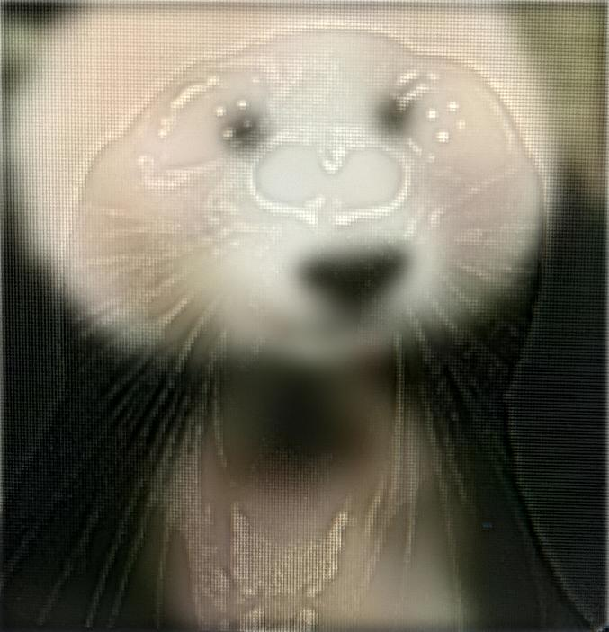
This pair needed a compromise on scale. The seal's eyes are 360px apart against a head 2.2× that width; the panda's are 128px apart against a head 3.5× that width. Matching eye distance exactly blew the panda up until its ears left the frame, so I scaled it by the geometric mean of the eye-matched and head-matched scales.
Cat + apple-person: sigma1 = 6, sigma2 = 14 (favorite result)
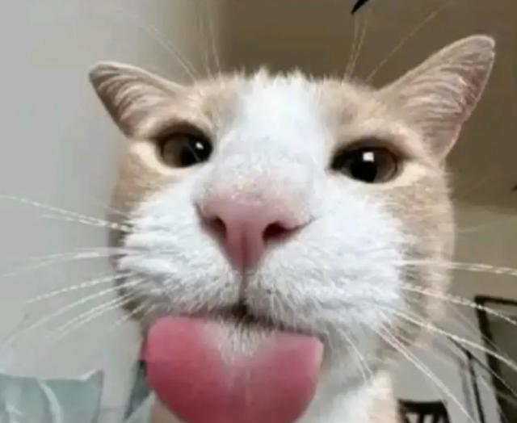
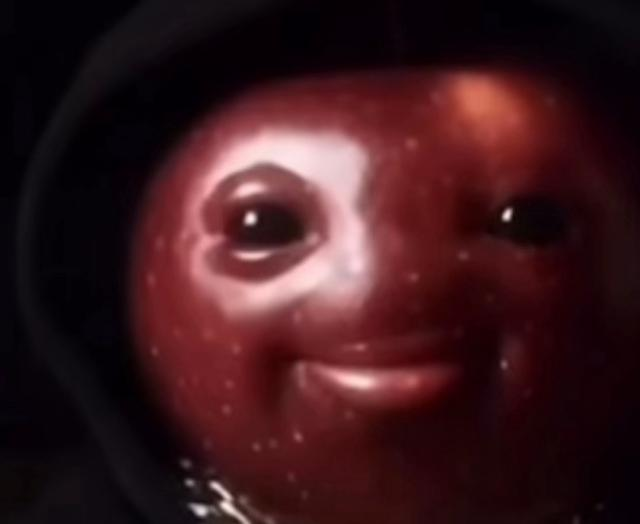
This is the strongest of the three, because the two images differ sharply in tone. The apple-person is dark with a red face on a black hood; the cat is bright cream. That contrast means the cat's whiskers read as bright strokes against a dark ground instead of washing out, which is what happened when I tried pairing two similarly pale subjects. Assignment matters too: the cat's identity lives in its whiskers and fur (high frequency) while the apple-person's lives in a red circle inside a black hood (low frequency), so putting each in its matching band is what makes the illusion work.
Frequency analysis of the favorite result
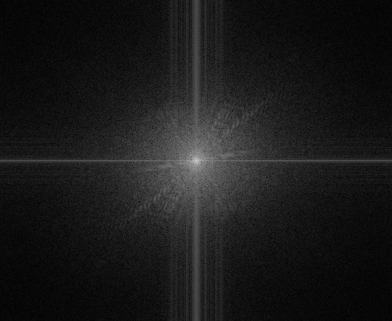
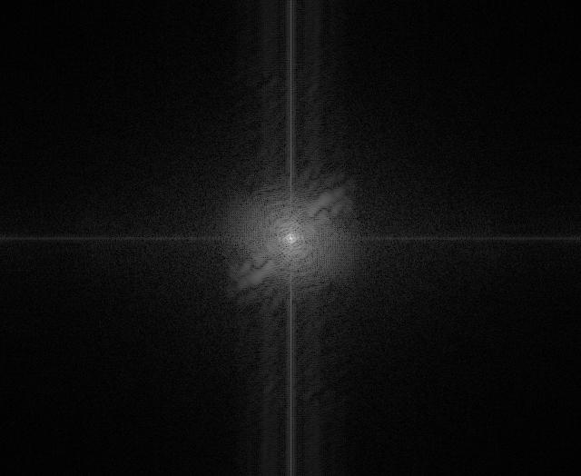
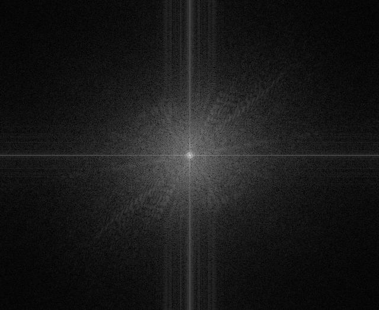
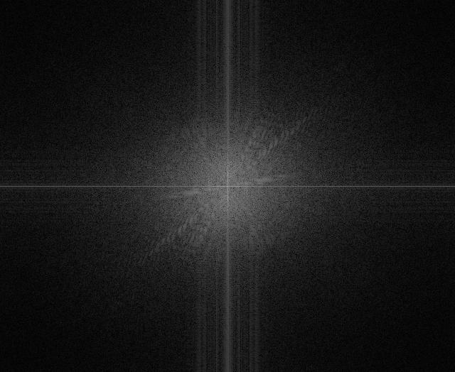
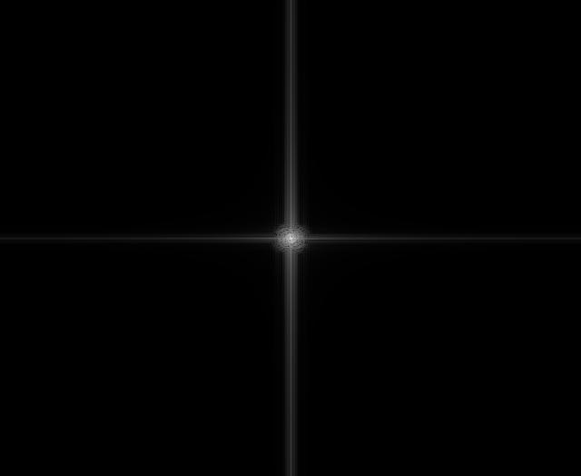
These are log-magnitude Fourier transforms, all rendered on a shared color scale so they can be compared directly. The two inputs show a bright concentration at the center, confirming most of a natural image's energy is low-frequency. High-pass filtering removes that center spike while leaving the outer region untouched; low-pass filtering does the reverse, leaving a single bright point on black. The hybrid shows both: the center point from the apple-person plus the diffuse outer spread from the cat.
| Mean FFT magnitude | DC | r 0–5 | r 5–15 | r 15–40 | r 40–100 |
|---|---|---|---|---|---|
| cat input | 200,019 | 8,500 | 1,063 | 203 | 40 |
| cat, high-passed | 2,740 | 481 | 252 | 150 | 38 |
| apple-person input | 49,882 | 5,760 | 620 | 127 | 13 |
| apple-person, low-passed | 49,227 | 5,306 | 265 | 6 | 0.8 |
Numerically: the high-pass cut DC by 73× and the innermost ring by 18× while leaving the r 40–100 band essentially unchanged. The low-pass preserved DC and the innermost ring while cutting r 15–40 by 21×. Each filter removed exactly the band it was supposed to.
Part 2.3Gaussian and Laplacian stacks
A stack is a pyramid without the downsampling, so every level stays at the original resolution. Level 0 of the Gaussian stack is the input; each subsequent level is the previous one blurred again with the same kernel (49×49, σ = 8), so the blur compounds. The Laplacian stack is the difference between consecutive Gaussian levels, with the final level being the most-blurred Gaussian residual, so that summing the whole Laplacian stack reconstructs the original exactly.
The "oraple" column here is the naive splice: the left half of the apple concatenated to the right half of the orange with a hard cut. That is what motivates the blending in Part 2.4.
Gaussian stack: level 0

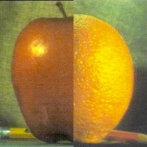
Gaussian stack: level 2
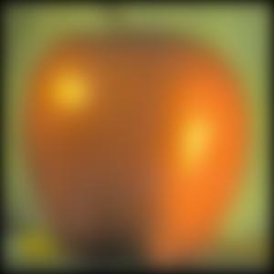
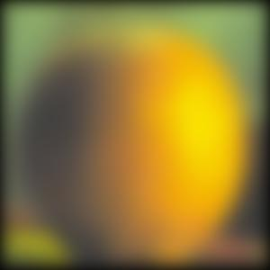
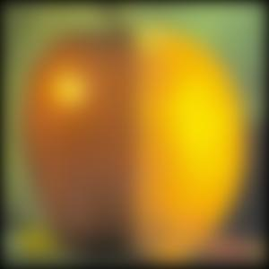
Gaussian stack: level 4
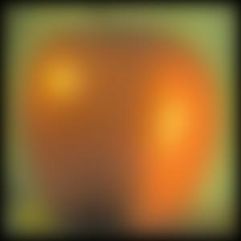
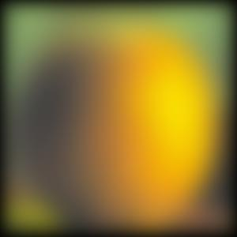
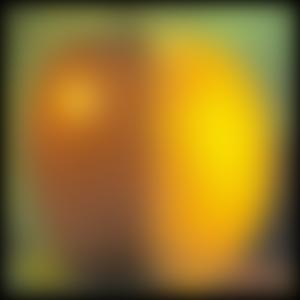
Laplacian stack: level 0 (highest frequencies)
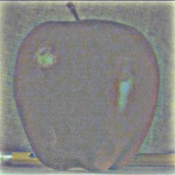
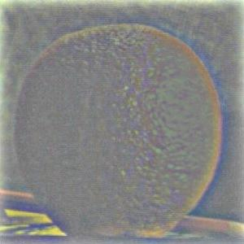
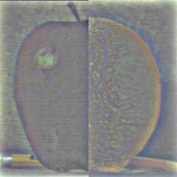
Laplacian stack: level 2
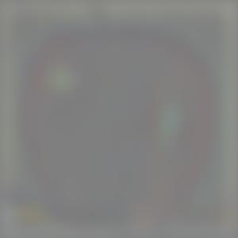
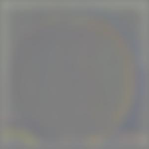
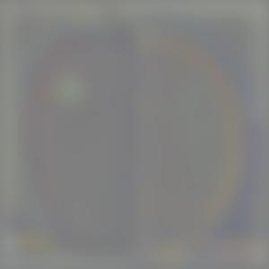
Laplacian stack: level 5 (residual)
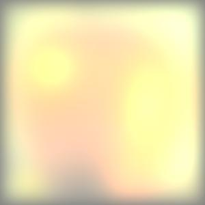
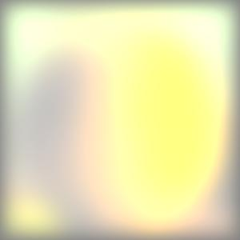
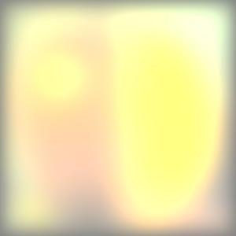
Part 2.4Multiresolution blending
The trick is to blend each frequency band over a different spatial distance: fine detail switches over abruptly, broad color transitions over a wide region. That falls out naturally from building a Laplacian stack for each image, a Gaussian stack for the mask, and combining them level by level:
blended_levels[i] = mask_stack[i] * lap_1[i] + (1 - mask_stack[i]) * lap_2[i]
Because the mask gets blurrier at each level alongside the images, the coarse bands get a wide transition while the finest band keeps a sharp one. Summing the blended stack collapses it back into the final image.
The oraple: vertical seam


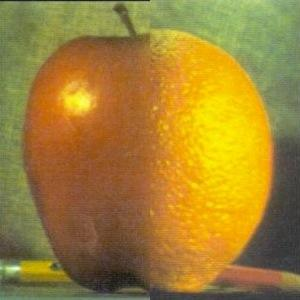
Chess rooks: vertical seam
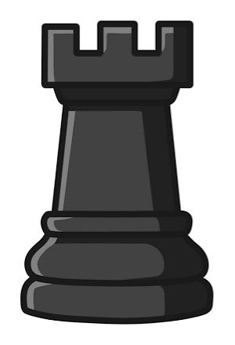
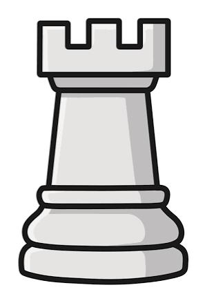
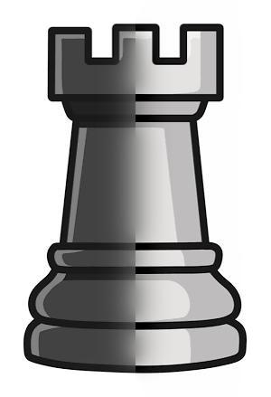
Both rooks are identical in shape, so this isolates the color transition completely. It's also an unforgiving test: near-black against near-white on a flat white background gives the seam nowhere to hide. Sampling a horizontal slice through the body confirms there is no step: brightness ramps smoothly from 0.27 to 0.87 across 80 pixels. Using a wider mask blur made it worse, not better, by pulling both halves toward mid-gray and destroying the contrast that makes the image interesting.
Soccer ball as the moon: irregular mask
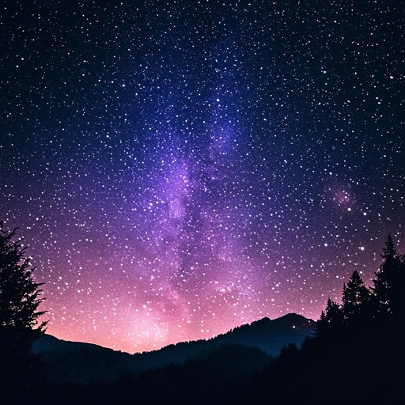
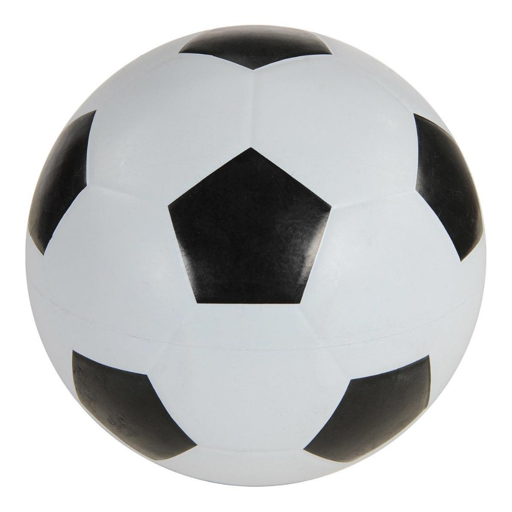
The mask is found automatically rather than hardcoded: everything darker than 0.92 against the ball's white backdrop is the ball, which gives its bounding box and from that its center and radius. The circle is pulled 2px inside the rim so the white background doesn't get dragged into the dark sky. A small amount still bleeds through at the transition, but against a night sky that reads as atmospheric glow rather than as an artifact.
The process, level by level
Left column is the apple weighted by the mask, middle is the orange weighted by the inverted mask, right is their sum. Each band is stretched to its own range so the structure is visible. The higher bands have small amplitude and would otherwise render as flat gray. Zero maps to mid-gray under that normalization, which is why the masked-out half of each contribution appears neutral rather than black.
Level 0: high frequency
Level 2: medium frequency
Level 4: low frequency